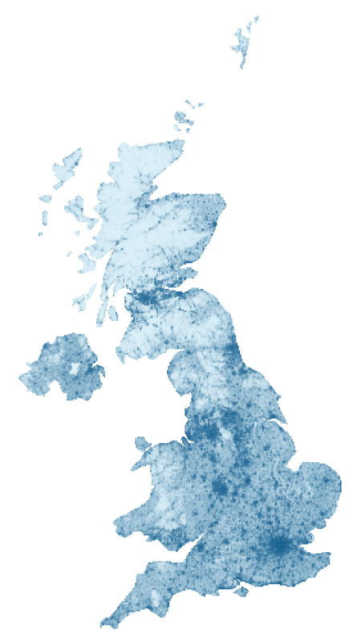

A continuous colour field, sampled at node centres and edge midpoints. It does not alter geometry.
650 nodes of 650 requested. Stop: target_reached. 240/240 occupied tiles; 100.0% of tile area has a node. This is a coarse coverage measure, not solid ink coverage.
A painted scalar raster becomes a colour map through bilinear interpolation.
650 nodes of 650 requested. Stop: target_reached. 240/240 occupied tiles; 100.0% of tile area has a node. This is a coarse coverage measure, not solid ink coverage.
An abstract focal point, not population: density rises smoothly toward the centre.
321 nodes of 650 requested. Stop: attempt_budget_exhausted. 212/240 occupied tiles; 88.3% of tile area has a node. This is a coarse coverage measure, not solid ink coverage.
A coarse painted mask creates bands of dense and open texture. Any scalar measurement can play this role.
420 nodes of 650 requested. Stop: attempt_budget_exhausted. 236/240 occupied tiles; 98.3% of tile area has a node. This is a coarse coverage measure, not solid ink coverage.
Coordinated scale changes radius, wall, gap, line width and length together; colour remains independent.
650 nodes of 650 requested. Stop: target_reached. 238/240 occupied tiles; 99.2% of tile area has a node. This is a coarse coverage measure, not solid ink coverage.
The UK and Spain examples use bundled population estimates. Other scalar measurements or painted fields work too. These maps are illustrative transformations, not one node per person.
Data-driven growth
The shape of a population.
UK population-density estimates guide a network inside the country boundary. Cities become finer and denser; rural areas leave more breathing room.

Input: 2020 estimates, persons per square kilometre. Pale blue is near zero; dark blue is 10,000 or more. The colour scale is logarithmic.
The input is bundled with the library and runs offline. It includes Northern Ireland and UK islands, and excludes the Republic of Ireland. Small islands and narrow coastal features may remain empty.
From density to spacing
Population spans a wide range. A logarithmic mapping compresses the extremes so city structure remains readable: t = min(1, log(1+density)/log(10001)). Preferred spacing is 5 + 20*(1-t); geometry scale is 0.45 + 0.9*(1-t). Cities receive smaller, closer nodes. Collision checks and finite attempt budgets still limit packing.
This is an artistic transformation, not a linear population map. The source raster is resampled from approximately 1 km to 360 by 560 cells. The boundary is simplified; no-data samples become zero. Pixel centres share the boundary projection: longitude scaled by cos(55 degrees), north at the top. This display projection is not equal-area.
Different uses of the same map
Population is just one scalar input. Compare spacing-only, colour-only, and coordinated size/spacing below. The scene guide also demonstrates abstract radial fields and painted rasters, suitable for visual emphasis or any other spatial measurement.
Spain uses the same 2020 WorldPop source and Natural Earth boundaries. The crop includes mainland Spain and the Balearic Islands; the Canary Islands are excluded. Small territories may be empty after geometric filtering.